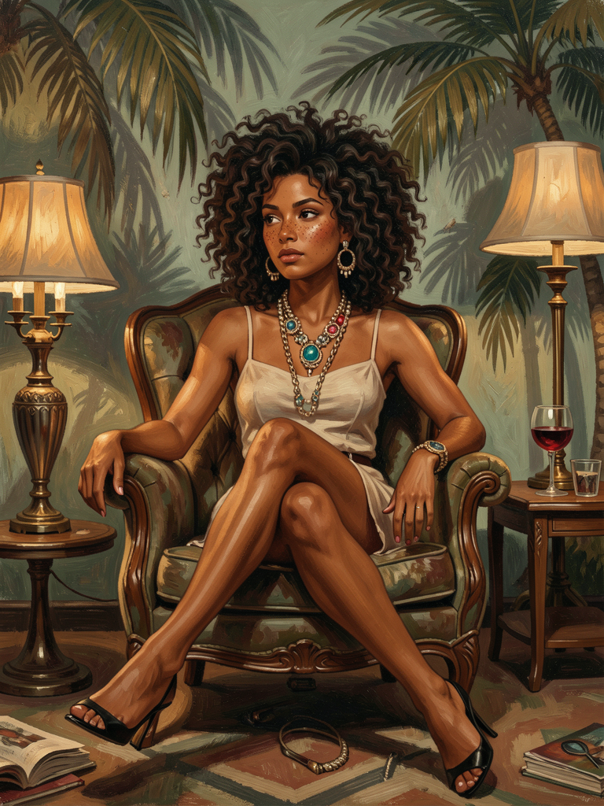
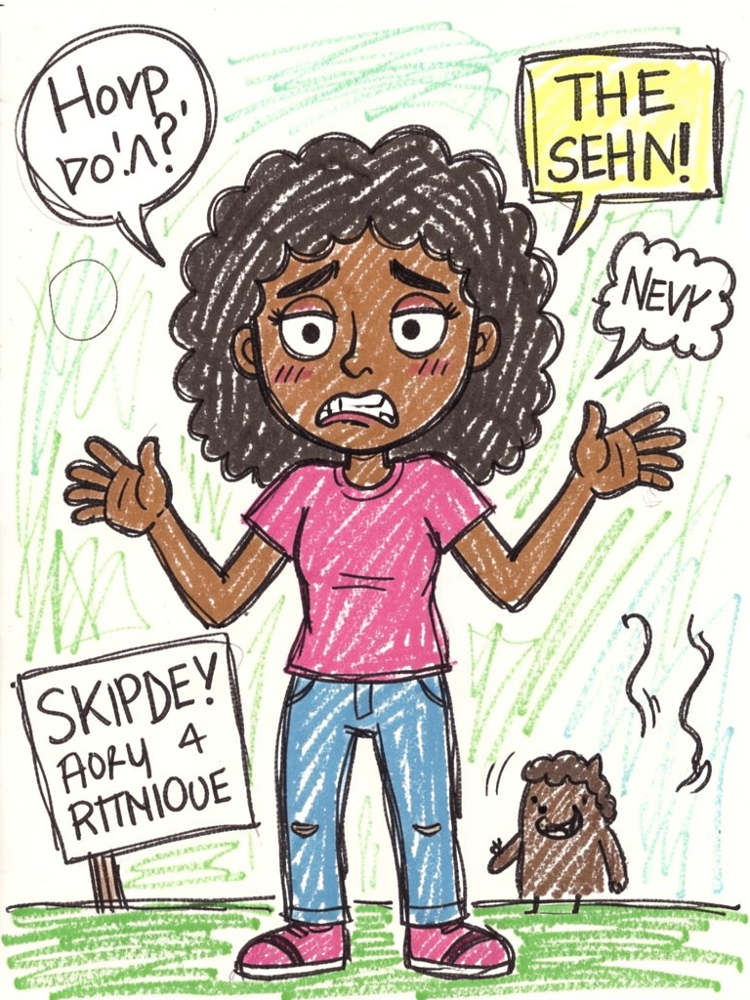
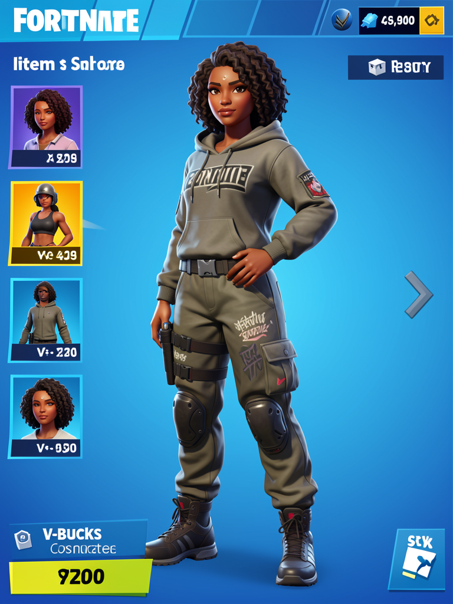
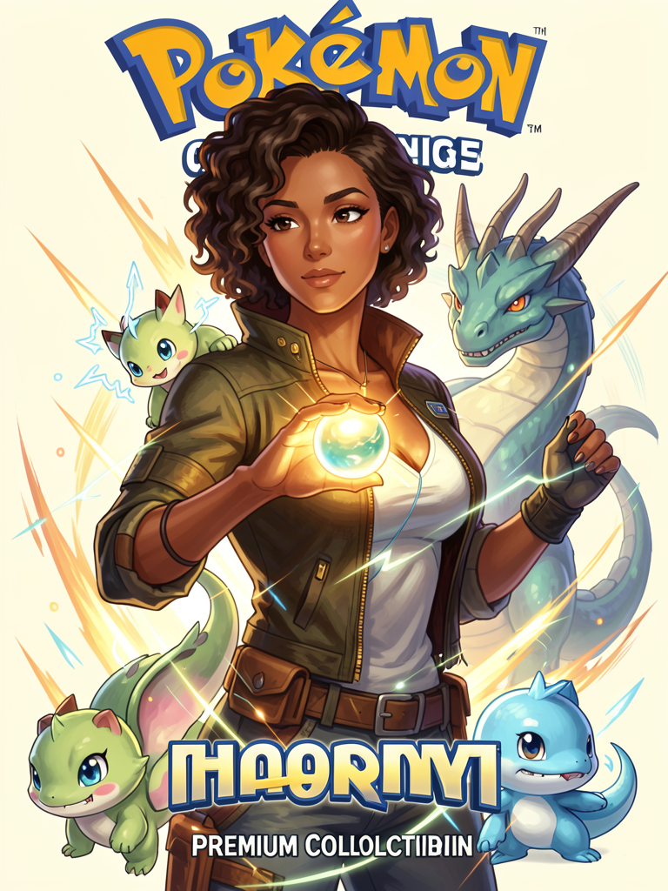
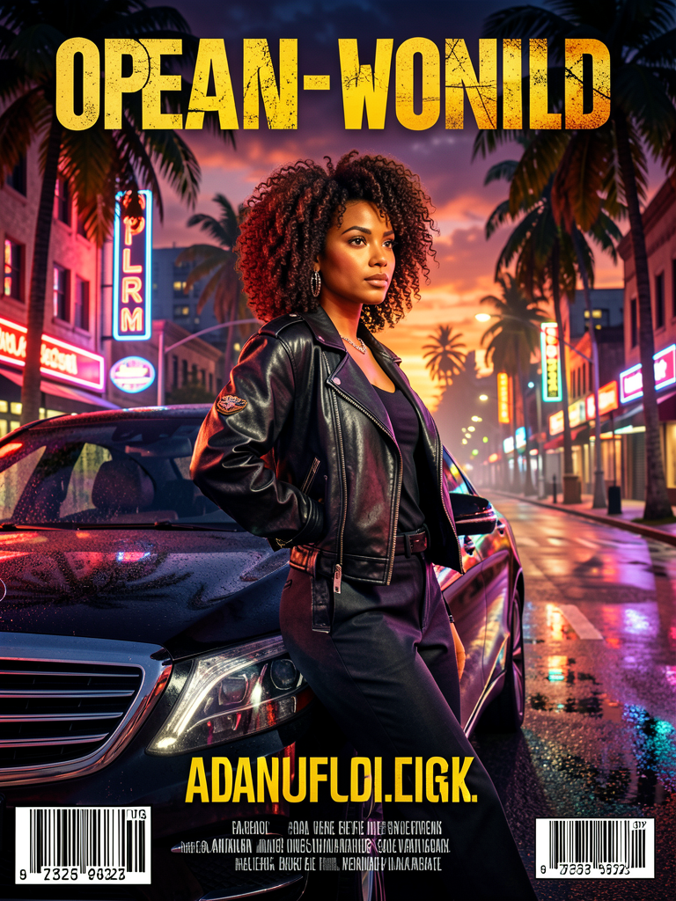
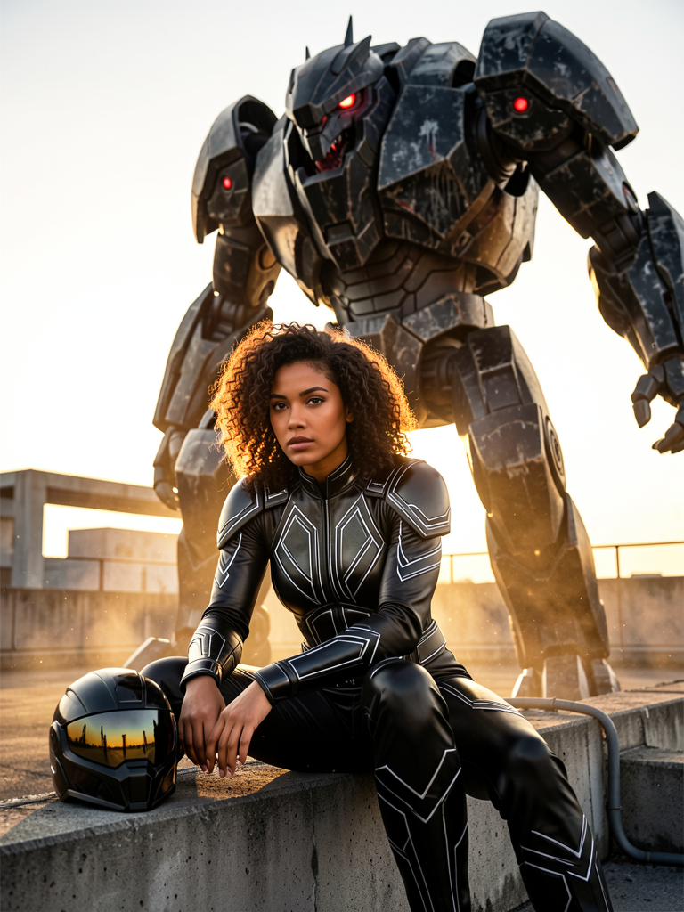
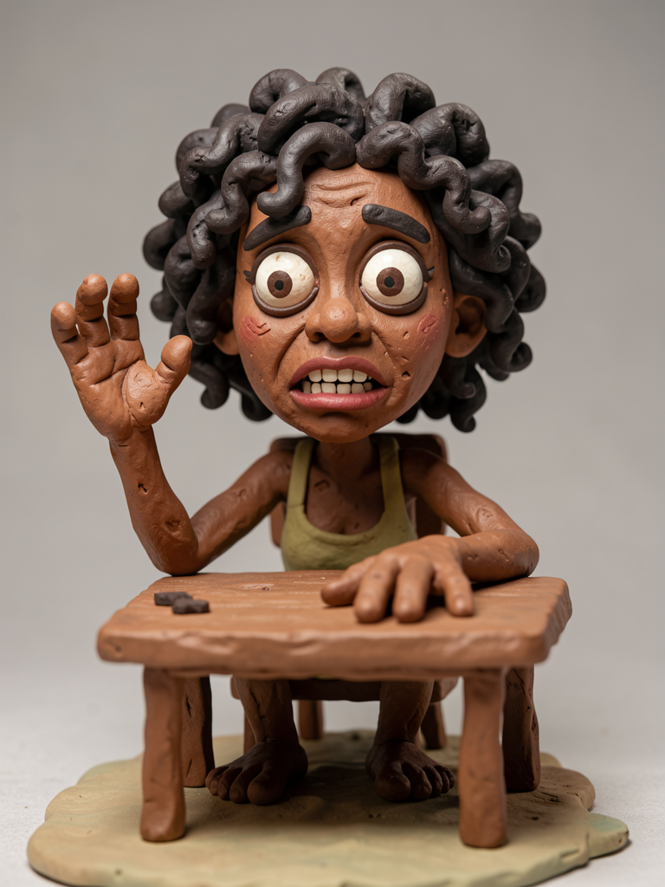
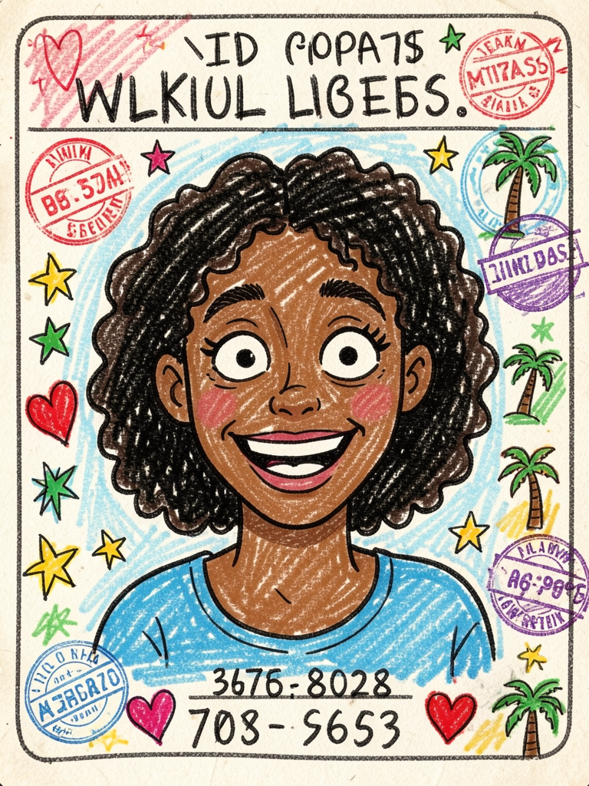
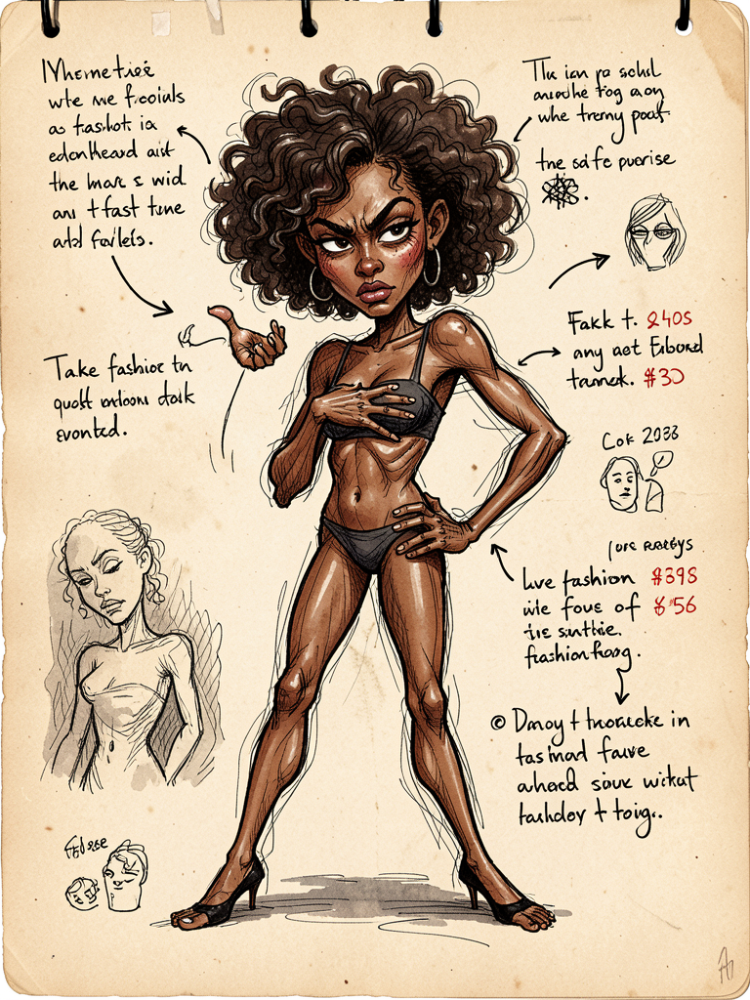
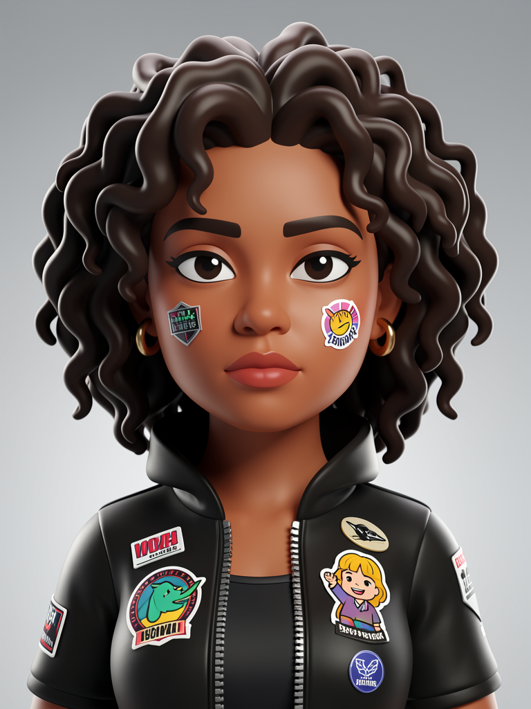

Inside the guide
The entire guide rests on a single idea: separate who the person is from how the world is stylized.
Reference 1 locks the identity
Face, proportions, skin tone, hair, and recognizable appearance. This is what keeps the character consistently recognizable as the same person.
Reference 2 guides only the outfit
Silhouette, accessories, palette, and styling mood. Never the identity—only the language of clothing and fashion.
Each variation changes the world and the pose
You’re not repainting the same image—you’re moving the same person through different visual worlds.
The separation is what makes it repeatable
When identity and styling get mixed together, the result becomes random. A clean split keeps everything predictable.
💡 The central lesson
The best character prompts separate who the person is of how the world is stylized.
Keep the face consistent, change the visual genre, and create a new pose every time. That’s what makes the prompts useful for repeatable character design.
Example gallery
The same identity traveling through completely different visual genres—and remaining recognizable. Images generated locally with inemaimg.










😄 Honest Note: these images were generated with flux2-klein (a local, free, and very fast model)—so they didn’t turn out perfect. That’s what free gets you. This is a research/education project; a heavier model can improve the quality considerably.
Get the 10 complete prompts
Each prompt comes with notes, ready-to-use English text, and an example image. Start with the two-reference system, then just copy and paste.